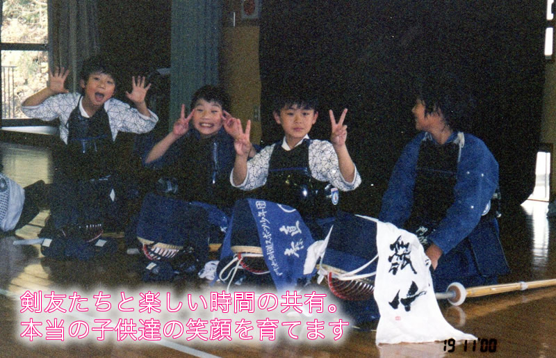
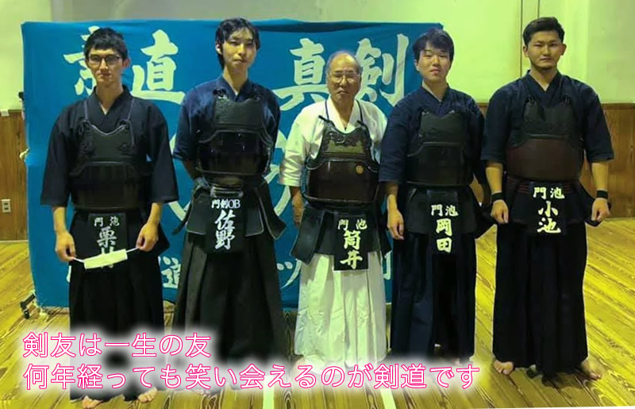
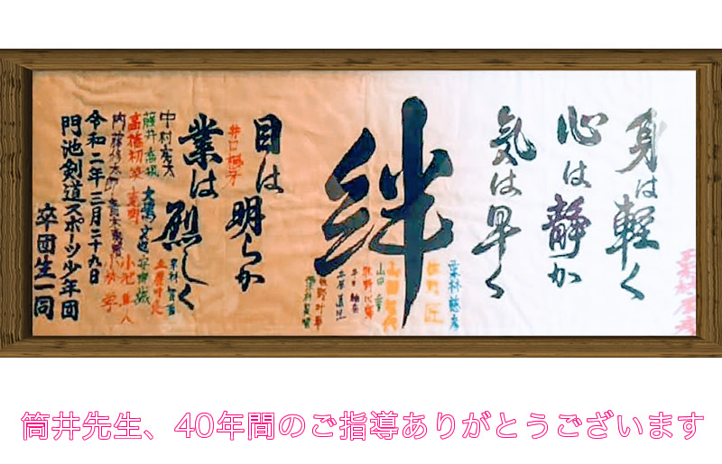
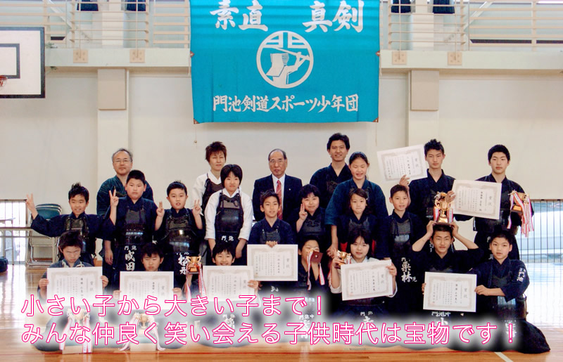
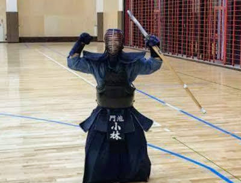

剣道を通じて子供達に「素直に学ぶことの大切さ」「真剣に学ぶことの楽しさ」を育てます！一緒に剣道をやりましょう！





門剣ブログ
稽古日記やイベントのお知らせなどを掲載します。ぜひお読みください。門池剣道スポーツ少年団

一緒にやってくれる人募集！
一緒に門池剣道スポーツ少年団を盛り上げてくれる人を大募集です！剣道経験者、剣道未経験者、門剣OB、誰でもウェルカムです！近隣の先生方も、ぜひ遊びに来てください！